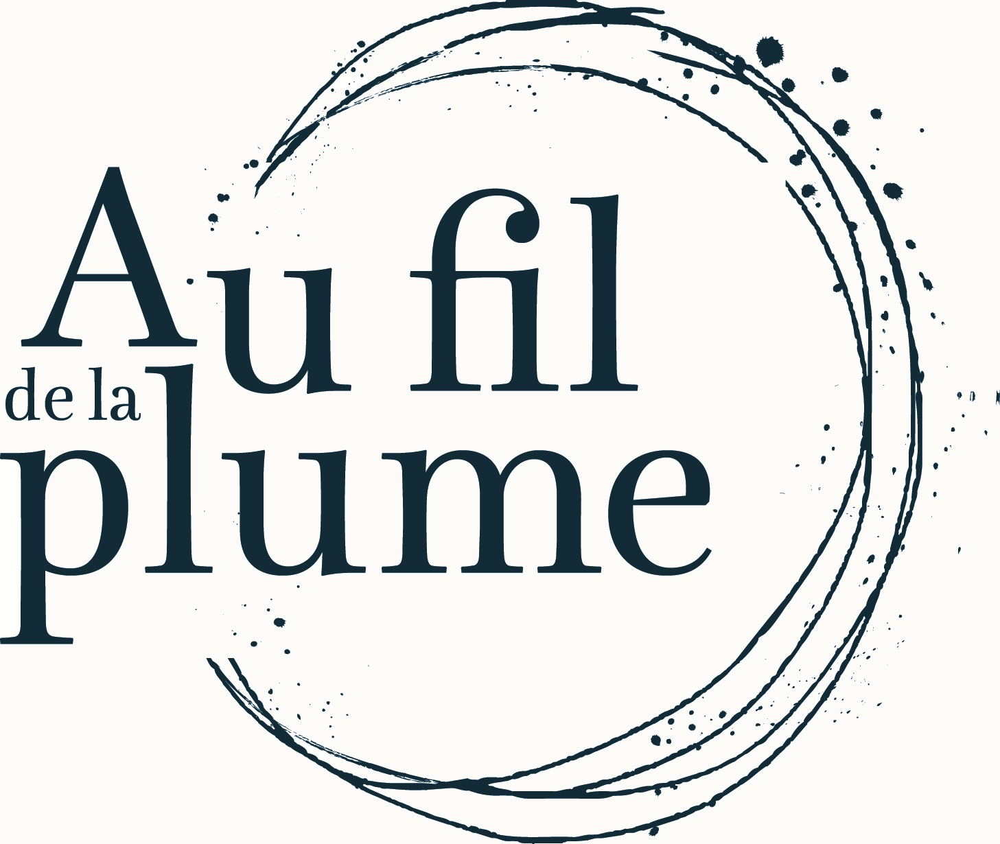

Biographe familiale — Ecrire et transmettre vos récits de vie
Biographe familiale, je vous propose de vous prêter ma plume pour raconter vos souvenirs. Votre histoire entière, une période ou un aspect particulier de votre vie (professionnel, amoureux, …) peuvent donner lieu à un récit riche et passionnant.
Au fil des entretiens, j’écoute, je note, j’enregistre vos paroles, et je retranscris votre histoire pour en faire le récit. Au fil d’une écoute patiente, attentive et sans jugement, je vous laisse retrouver des souvenirs enfouis, rattraper des souvenirs qui allaient s’évanouir. Au fil de votre voix, je tisse vos mots et retiens votre histoire sur le papier.
Pour garder une trace, partager une expérience de vie, transmettre son histoire. Pour faire retour sur son parcours, ne pas laisser s’envoler les souvenirs.
Au fil de la plume, c’est s’offrir le récit de sa vie, ou l’offrir à ses proches :
Plusieurs options sont possibles pour le rendu du texte : de la version numérique à l’édition d’un véritable livre avec mon partenaire Éditions Scripta, en passant par l’impression d’un livret.
Un premier entretien informel et gratuit nous permet de discuter de votre projet, d’en préciser les contours et d’envisager la manière dont nous pourrions travailler ensemble. À l’issue de cet entretien, je vous propose un devis personnalisé.
Nous nous retrouvons chez vous, ou dans un endroit plus neutre si vous préférez. La durée et la fréquence des entretiens sont entièrement définies selon vos besoins.
Taux horaire : 65 € / heure
Biographie complète : Séances d'entretien de 2h en moyenne (6 à 10 entretiens nécessaires). Le paiement peut s’échelonner à la séance.
Récit ciblé : Pour un projet précis (rencontre amoureuse, période restreinte, thématique particulière), un entretien ciblé peut suffire.
Titulaire d’un Master de Lettres Modernes et professeure de français depuis quinze ans, j’ai toujours écrit en parallèle, que ce soit pour mes grands-mères ou pour mes enfants. J’aime plus que tout le lien entre les générations et la transmission.
Un jour, ma grand-mère m’a demandé de l’accompagner dans l’écriture de ses souvenirs d’enfance. De ce travail ensemble est né Le Vent en face. Cette collaboration a fait germer l’idée de la biographie familiale, située au croisement de ce qui me passionne : l’amour des mots, la qualité d’écoute et l’intérêt pour les histoires de vie.